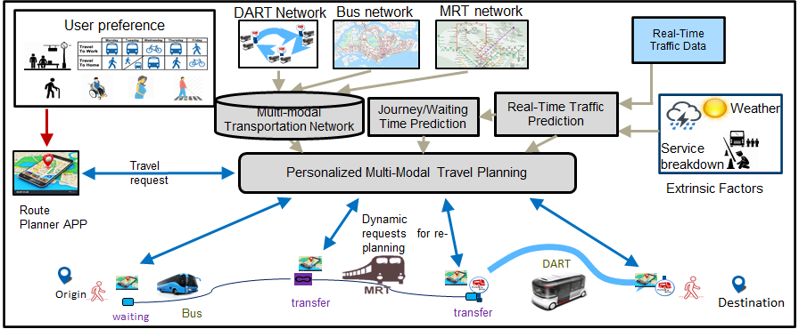

Our Projects


Motivation
A key technological challenge of smart cities is the need to process extremely large amounts of geographically distributed sources of data in real-time. This challenge can only be efficiently addressed with a full distributed system architecture spanning from edge devices to large-scale cloud analytics. Our current research focuses on future mobility solutions which will become more demand responsive to deliver diversified, passenger-oriented solutions. Mass deployment of distributed low-cost smart sensors on roads and vehicles can be used to collaboratively provide high level information of passenger demand, incidents, congestion and traffic patterns. These information could enable users to instantly adapt their itineraries to newly available information. Operators of flexible mobility services, on the other hand, could use this information collected over time to adjust vehicle routes or schedules according to the current demand situation. In addition, this can also lead to the development of new infrastructures that increases the robustness and safety of the transport system.
Presently, we are developing a framework that integrates input from our distributed smart sensors and traffic information, with AI optimization algorithms that can lead to new urban mobility solutions for traffic congestion management, increasing usage of public transport, and better planning of Singapore’s transportation infrastructure.
The following are some of our projects in this area:
Multi-criteria Multi-modal Journey Planning
Effiient and easy-to-use public transportation system plays an important role in sustainable cities to reduce traffic congestion and lower carbon emissions from vehicles. A key enabler to the success of public transportation system lies in the provision of effiient, convenient and reliable journey planning, which can recommend multiple journey options that are characterized by different criteria (such as cost, distance, waiting time, travel time, number of transfers) to enable passengers to make advanced and on-the-move travel decisions. Such system must be able to respond quickly to travel plan queries of large number of users. Furthermore, dynamic factors (e.g. real-time traffic condition, bus arrival time, travel demand) should be seamlessly integrated into journey planning algorithms, since they provide new opportunities to further improve travel effiiency via dynamic re-planning.
Our research integrates journey time prediction, user preference modelling and mining, multi-criteria optimization, as well as situation-aware dynamic re-planning into a unified framework. In addition, the proposed method is able to handle large volume of requests within a short period. We have developed the following:
- A novel multi-modal transportation network (MMTN) model (consisting of bus, MRT/LRT, and walking). The proposed MMTN model is not only able to accurately model multiple travel criteria, traffic uncertainty, and the dynamic traffic information, but it also leads to lower computation overhead and memory storage.
- A deep learning based approach that accurately predicts the travel time of bus journey that takes into account the passengers riding time on multiple bus trips, as well as the waiting time at transfer points.
- Efficient deep learning based multi-criteria travel planning algorithm that provide fast recommendation of multiple routes associated with diffirent criteria and arrival guarantees, to large volume of users.

This research project is funded in part by the National Research Foundation Singapore under its Campus for Research Excellence and Technological Enterprise (CREATE) programme with the Technical University of Munich at TUMCREATE.
Publications
- Guiyuan Jiang, Siew-Kei Lam, Peilan He, Changhai Ou, and Dihao Ai, “A Multi-Scale Attributes Attention Model for Transport Mode Identification”, IEEE Transactions on Intelligent Transportation Systems [PDF]
- Peilan He, Guiyuan Jiang, Siew-Kei Lam, and Yidan Sun, “Learning Heterogeneous Traffic Patterns for Travel Time Prediction of Bus Journeys”, Information Sciences, Vol. 512, February 2020, pp. 1394-1406 [PDF]
- Peilan He, Guiyuan Jiang, Siew-Kei Lam, and Dehua Tang, “Travel Time Prediction of Bus Journey with Multiple Bus Trip”, IEEE Transactions on Intelligent Transportation Systems, Vol. 20, No. 11 , November 2019 [PDF]
- Peilan He, Yidan Sun, Guiyuan Jiang, Siew-Kei Lam, “Predicting Travel Time of Bus Journeys with Alternative Bus Services”, 19th IEEE International Conference on Data Mining Workshop (ICDMW), November 2019
- Yidan Sun, Guiyuan Jiang, Siew-Kei Lam, Shicheng Chen and Peilan He, “Bus Travel Speed Prediction using Attention Network of Heterogeneous Correlation Features”, SIAM International Conference on Data Mining (SDM), May 2019 [Calgary, Canada] [PDF]